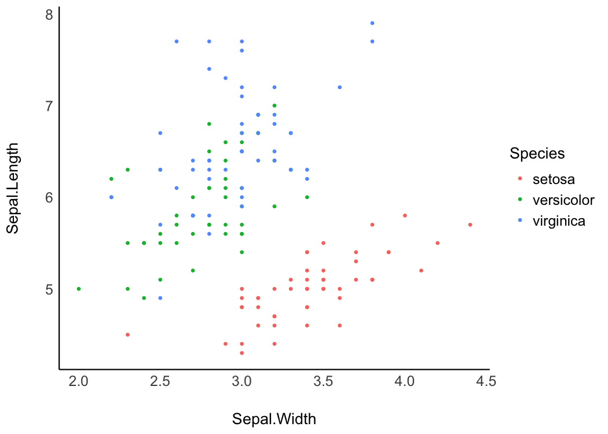
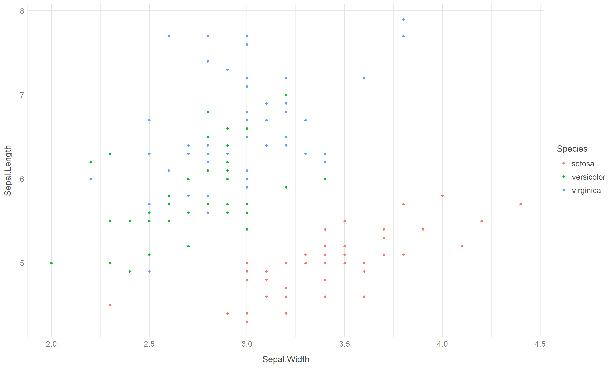
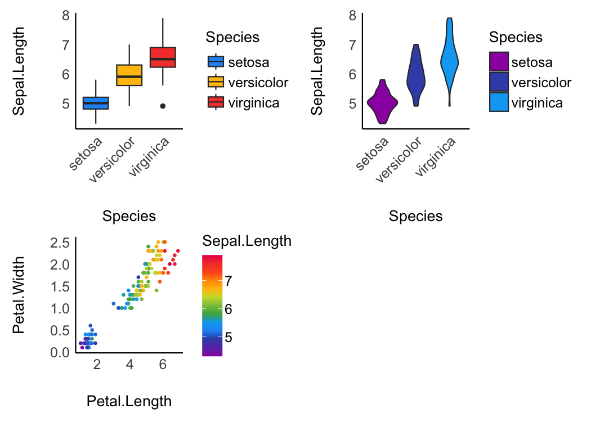
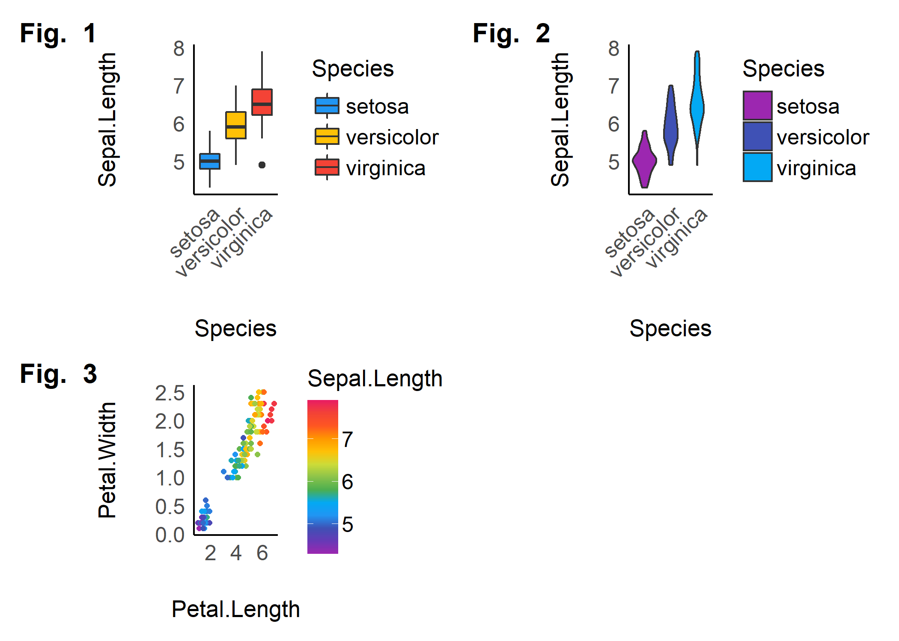
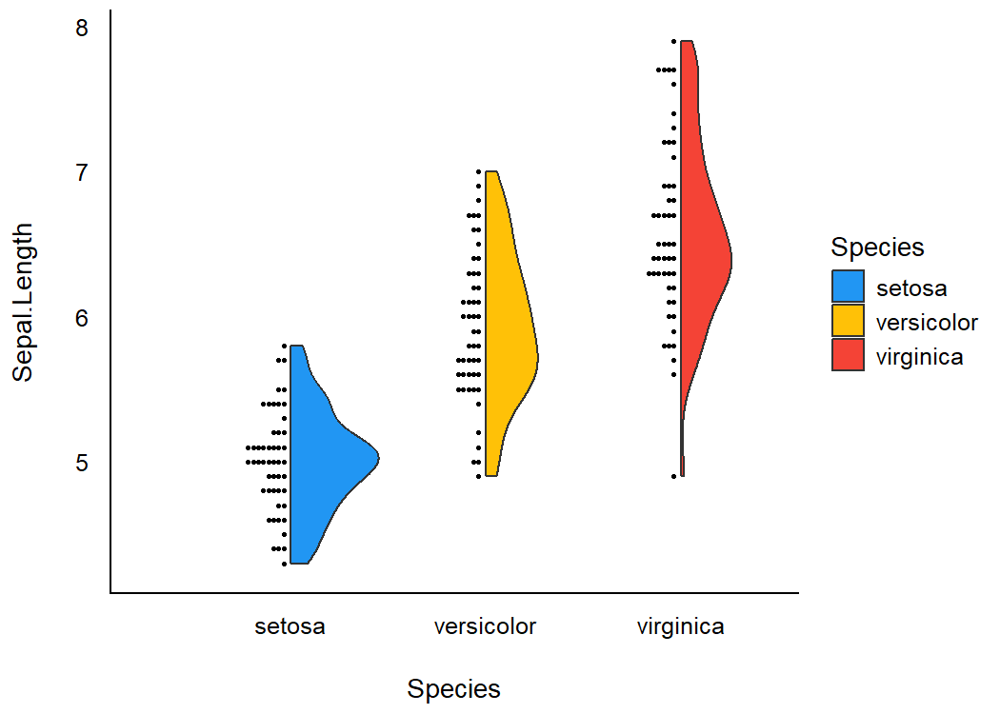
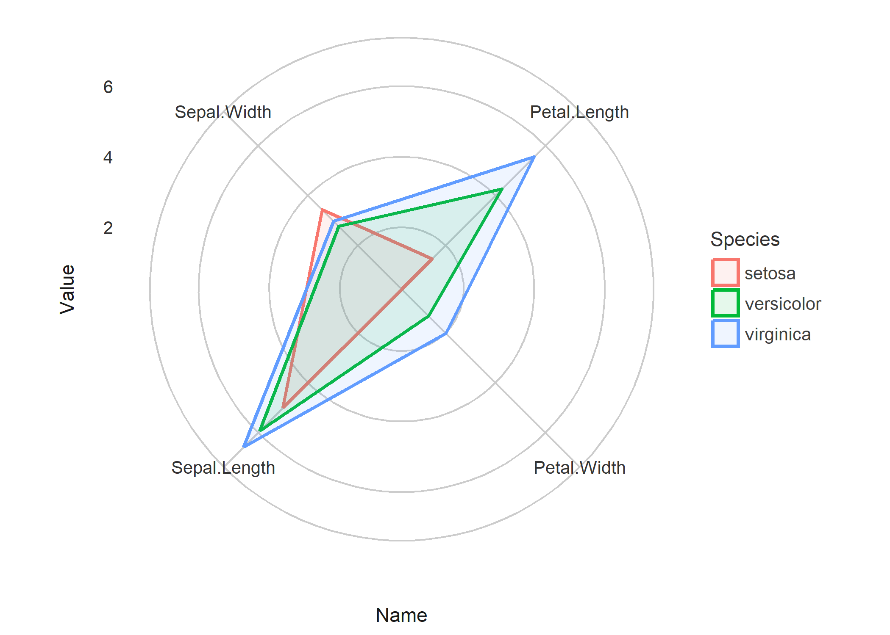

“Damned are those who believe without seeing”
Installation

Run the following:
install.packages("devtools")
devtools::install_github("easystats/see")And then load it:
Documentation
This package provides visualisation toolbox for R packages in the easystats ecosystem and extra geoms, themes and color palettes for ggplot2


Themes
Modern
library(ggplot2)
ggplot(iris, aes(x = Sepal.Width, y = Sepal.Length, color = Species)) +
geom_point2() +
theme_modern()
Lucid
library(ggplot2)
p <- ggplot(iris, aes(x = Sepal.Width, y = Sepal.Length, color = Species)) +
geom_point2()
p + theme_lucid()
Palettes
This is just one example of the available palettes. See this vignette for a detailed overview of palettes and color scales.
Material design
p1 <- ggplot(iris, aes(x = Species, y = Sepal.Length, fill = Species)) +
geom_boxplot() +
theme_modern(axis.text.angle = 45) +
scale_fill_material_d()
p2 <- ggplot(iris, aes(x = Species, y = Sepal.Length, fill = Species)) +
geom_violin() +
theme_modern(axis.text.angle = 45) +
scale_fill_material_d(palette = "ice")
p3 <- ggplot(iris, aes(x = Petal.Length, y = Petal.Width, color = Sepal.Length)) +
geom_point2() +
theme_modern() +
scale_color_material_c(palette = "rainbow")Multiple plots
The plots() function allows us to plot the figures side by side.
plots(p1, p2, p3, n_columns = 2)
The plots() function can also be used to add tags (i.e., labels for subfigures).

Better looking points
geom_points2() and geom_jitter2() allow points without borders and contour.
normal <- ggplot(iris, aes(x = Petal.Width, y = Sepal.Length)) +
geom_point(size = 8, alpha = 0.3) +
theme_modern()
new <- ggplot(iris, aes(x = Petal.Width, y = Sepal.Length)) +
geom_point2(size = 8, alpha = 0.3) +
theme_modern()
plots(normal, new, n_columns = 2)
Half-violin Half-dot plot
Create a half-violin half-dot plot, useful for visualising the distribution and the sample size at the same time.
ggplot(iris, aes(x = Species, y = Sepal.Length, fill = Species)) +
geom_violindot(fill_dots = "black") +
theme_modern() +
scale_fill_material_d()Radar chart (Spider plot)
library(dplyr)
library(tidyr)
data <- iris %>%
group_by(Species) %>%
summarise_all(mean) %>%
pivot_longer(-Species)
data %>%
ggplot(aes(x = name, y = value, color = Species, group = Species)) +
geom_polygon(fill = NA, size = 2, show.legend = FALSE) +
coord_radar(start = -pi / 4) +
theme_minimal()
Plot functions for easystats packages
bayestestR
Plotting functions for the bayestestR package are demonstrated in this vignette.
parameters
Plotting functions for the parameters package are demonstrated in this vignette.
performance
Plotting functions for the performance package are demonstrated in this vignette.
modelbased
Plotting functions for the modelbased package are demonstrated in this vignette.
correlation
Plotting functions for the correlation package are demonstrated in this vignette.
effectsize
Plotting functions for the effectsize package are demonstrated in this vignette.